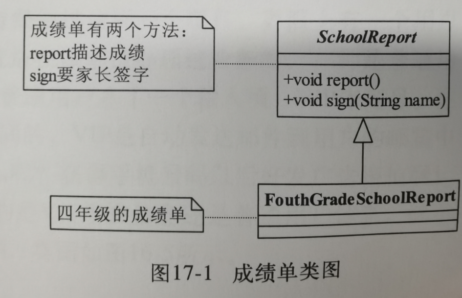
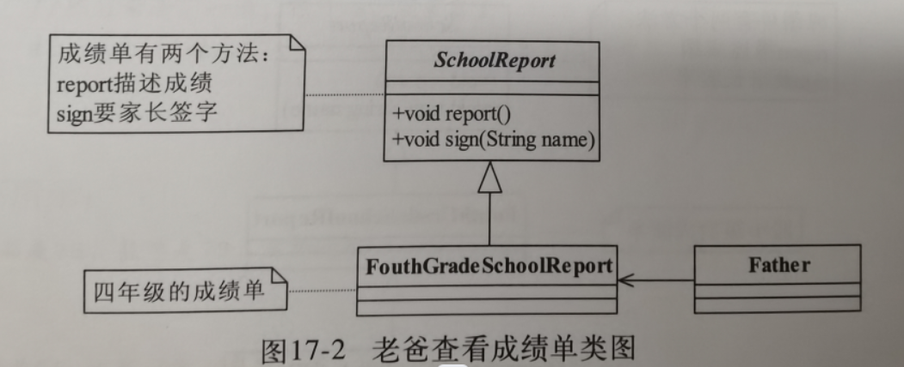
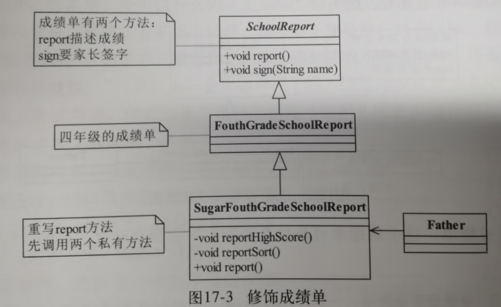
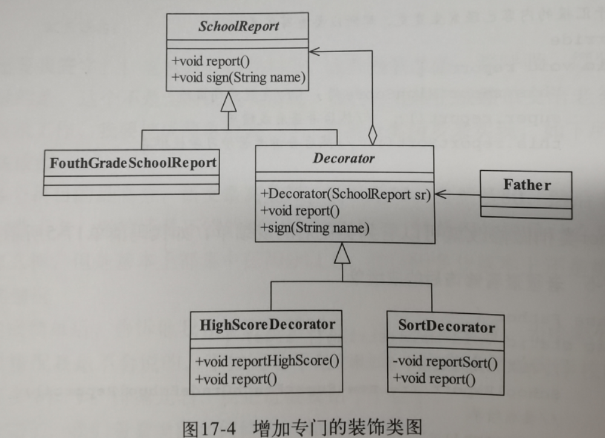
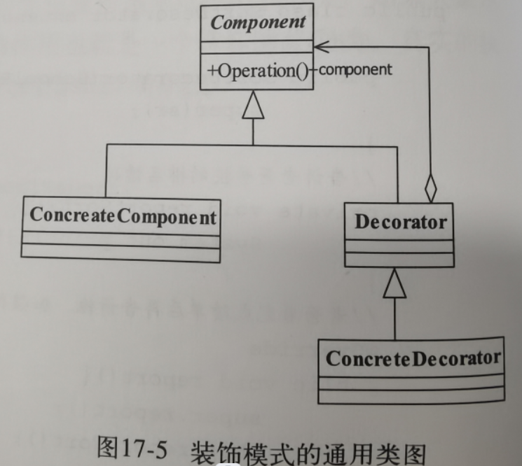

第17章 装饰模式
1.例子引入:罪恶的成绩单
SchoolReport抽象成绩单类:
描述了成绩单的两个主要功能:成绩描述和家长签字
FouthGradeSchoolReport成绩单实现类:
就是具体的成绩单.

Father类:
老爸查看成绩单类-这样看到的事真实数据,如果成绩不好铁定完蛋了

SugarFouthGradeSchoolReport修饰成绩单类:
在里面修饰一下,讲一下最高成绩reportHighScore,修饰一下排名reportSort,最后再覆盖一下原本的成绩描述report.然后再给老爸类查看,这样成绩看起来就好多了,就可以成功混过去了,但是问题是现在装饰的还只有两个,如果越来越多,或者需要某几个特性组合,那就出现了大量的重复代码.

Decorator抽象装饰类:
负责统一进行装饰,每个装饰都要求传递一个成绩单对象,然后有成绩描述,可以签名
HighScoreDecorator最高分装饰/SortDecorator排名装饰:
具体的装饰实现类则实现分别的功能,这样就算要自由组合也是没有问题的,缺点是类就会变得比较多了.

2.正式定义
Attach additional responsibilities to an object dynamically keeping the same interface.Decorators provide a flexible alternative to subclassing for extending functionality.
翻译:动态的给一个对象添加一些额外的职责.就增加功能来说,装饰模式相比生成子类更为灵活.
Component抽象构件:
需要增加功能的抽象类,原始的对象,就是上面例子的成绩单.
ConcreateComponent具体组件类:
具体的实现,实现抽象定义的操作
Decorator抽象装饰者:
定义装饰者要怎么装饰,必然是会有对于组件的引用的.
ConcreteDecorator具体装饰者:
各种不同的对方法的修饰,可以认为是一个一个小功能的增加

3.应用
优点:
1.装饰类和被装饰类互相独立,不会相互耦合2.装饰模式是继承关系的替代方案
3.装饰模式可以动态扩展一个实现类的功能.
缺点:如果装饰了多层,结果会很复杂.不利于调试.
适用场景:
需要扩展一个类的功能,或者给一个类附加功能需要动态的给一个对象增加功能,后面可以撤销
需要为一批类统一改装或加装功能